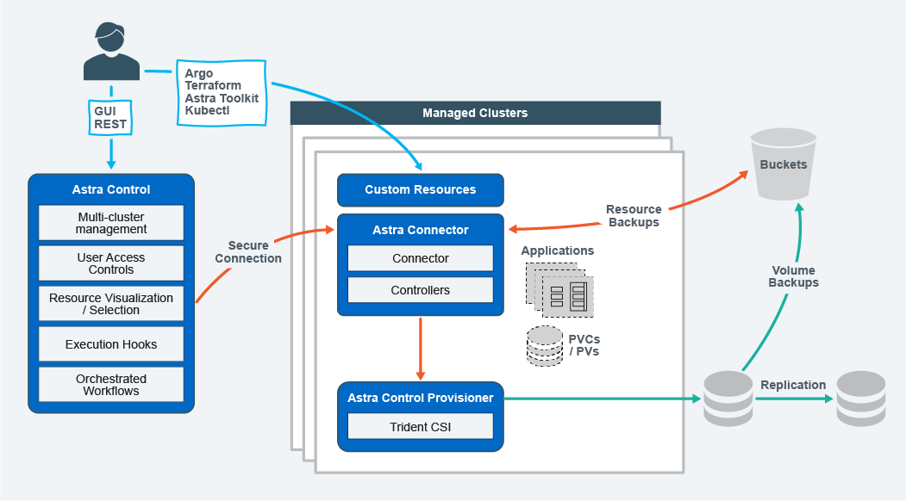

了解Astra Control
 建议更改
建议更改
Asta Control是一款Kubennet应用程序数据生命周期管理解决方案、可简化有状态应用程序的操作、并帮助您在混合和多云环境之间存储、保护和移动Kubennet工作负载。
功能
Astra Control 为 Kubernetes 应用程序数据生命周期管理提供了关键功能：
存储：
-
为容器化工作负载动态配置存储
-
对从容器到永久性卷的数据进行传输中加密
-
跨区域、跨区域复制
保护：
-
自动发现整个应用程序及其数据并提供应用程序感知型保护
-
根据组织需求从任何Snapshot版本即时恢复应用程序
-
跨区域、区域和云提供商实现快速故障转移
移动：
-
在Kubbernetes集群和云之间实现全面的应用程序和数据移动
-
即时克隆整个应用程序和数据
-
通过一致的Web UI和API一键迁移应用程序
架构
Asta Control的架构支持IT提供高级数据管理功能、以增强Kubbernetes应用程序的功能和可用性、简化容器化工作负载在公有云和内部环境之间的管理、保护和移动。 并通过REST API和SDK提供自动化功能、支持编程访问、以便与现有工作流无缝集成。
Astra Control是Kub联网 原生版本、支持利用自定义资源的数据保护工作流、同时保持与现有API和SDK的向后兼容性。Kubornetes原生数据保护具有显著优势；通过与Kubornetes API和资源无缝集成、数据保护可以通过组织的现有CI/CD和/或GitOps工具成为应用程序生命周期的固有组成部分。

Astra Control基于四个互补组件构建：
-
Astra Control：Astra Control是适用于所有托管集群的集中式管理服务，可提供协调的工作负载，以实现云和内部环境中的应用程序保护和移动性以及以下功能：
-
多个集群和云的组合视图
-
保护协调一致的工作流
-
精细的资源可视化和选择
-
-
Astra Connecter：Astra Connector与Astra Control相结合、可提供与每个受管集群的安全连接、无论连接状态如何、均可在本地执行计划的操作、并具有以下功能：
-
本地执行计划的操作、而不管连接状态如何
-
在集群之间分布和优化A作用 的系统资源使用的本地操作
-
本地安装、允许对集群进行最低权限访问以提高安全性
-
-
Astra Control置备程序：Astra Control置备程序提供核心CSI配置功能和高级存储管理功能，以增加安全性和灾难恢复配置，以及以下功能：
-
为容器化工作负载动态配置存储
-
高级存储管理：
-
对从容器到PV的数据进行传输中加密
-
SnapMirror Cloud功能支持跨区域、跨区域复制
-
-
-
Astra自定义资源：每个集群上使用的自定义资源提供了一种Kubernetes本机方法来在本地运行操作、简化了与其他Kubernetes友好工具和自动化的集成、并提供了以下功能：
-
直接的生态系统工具集成和自动化工作流
-
用于启用自定义工作流的较低级别的基本功能
-
部署模式
Asta Control有两种部署模式。

-
* Astra Control Service*：NetApp管理的服务、可为多个云提供商环境中的Kubernetes集群以及自管理Kubernetes集群提供应用程序感知型数据管理。
-
* Astra Control Center* ：自管理软件，可为内部环境中运行的 Kubernetes 集群提供应用程序感知型数据管理。Astra控制中心还可以安装在多个云提供商环境中、并具有一个NetApp Cloud Volumes ONTAP 存储后端。
| Astra 控制服务 | Astra 控制中心 | |
|---|---|---|
如何提供？ |
作为 NetApp 提供的一项完全托管的云服务 |
作为可下载、安装和管理的软件 |
它托管在何处？ |
基于 NetApp 选择的公有云 |
在您自己的Kubernetes集群上 |
如何更新？ |
由 NetApp 管理 |
您可以管理任何更新 |
支持哪些Kubednetes分发版？ |
|
|
支持哪些存储后端？ |
|
|